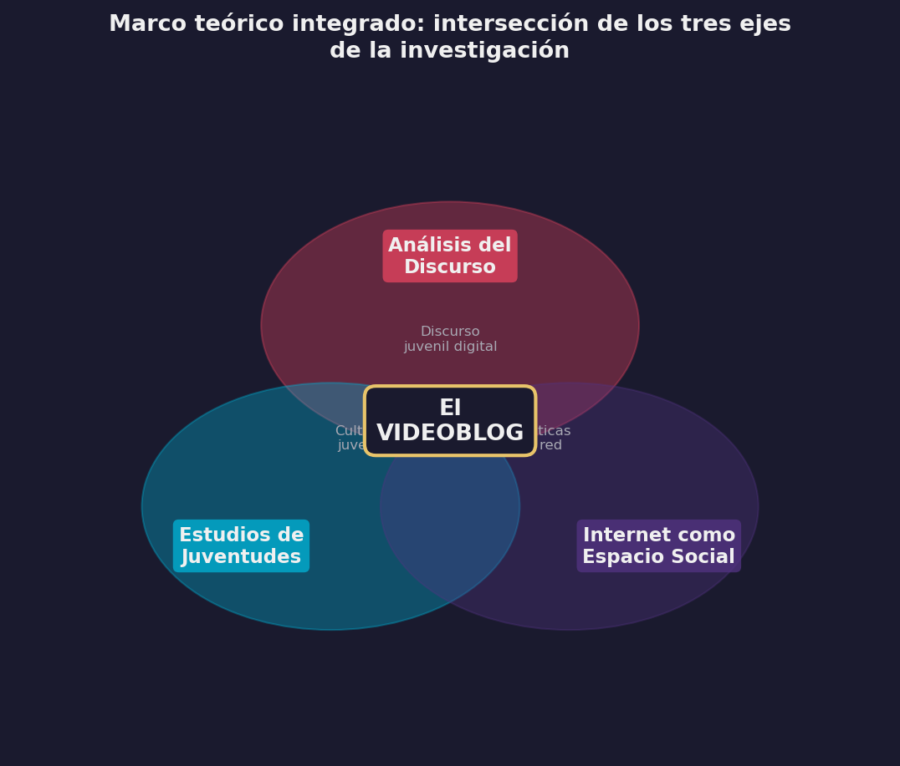

2 Marco Teórico y Antecedentes
2.1 Introducción
Construir un andamiaje conceptual para analizar fenómenos digitales impone una dificultad particular: los objetos de estudio cambian antes de que terminemos de definirlos. Esta investigación, como se dijo, circunscripta al período 2012-2016, adopta por eso un criterio de historicidad: para comprender cómo los jóvenes construían su identidad en ese lustro fundacional, es necesario reconstruir el horizonte de expectativas y las definiciones de género tal como eran concebidas en ese momento. Aplicar categorías posteriores correría el riesgo del anacronismo interpretativo. Este marco se vertebra así en tres ejes articulados de manera relacional, que responden a la necesidad de abordar la multidimensionalidad del fenómeno sin simplificar sus tensiones intrínsecas.
El eje central es el de los Estudios del Discurso. Retomo la tradición del Análisis Crítico y la lingüística textual (E. N. de Arnoux, 2006; Charaudeau, 2006; Dijk, 2003; Fairclough, 2008) para abordar el videoblog no como una novedad técnica, sino como una práctica social materializada en el lenguaje. Este eje se complementa con los desarrollos específicos del Análisis del Discurso Digital y la multimodalidad (Herring, 2015; Jewitt, 2009; Kress & Van Leeuwen, 2001), fundamentales para un género donde la imagen, el sonido y la interfaz co-construyen el sentido junto a la palabra. En el ámbito local y regional, los aportes de Palazzo (2010) y Palazzo (2014) sobre el ciberdiscurso juvenil y de Cantamutto & Vela-Delfa (2016) sobre la interacción digital resultan insoslayables.
El segundo eje se sostiene en los Estudios en Juventudes. Para evitar esencialismos biológicos, adoptamos la perspectiva sociocultural que concibe a las juventudes como construcciones históricas y situadas. Son centrales aquí los trabajos de Feixa (2008) y Feixa et al. (2016) sobre culturas juveniles y generaciones, así como las investigaciones latinoamericanas y nacionales que han mapeado las prácticas, consumos y territorialidades de los jóvenes en la región (Chaves, 2010; Margulis & Urresti, 1996; Morduchowicz, 2012; Reguillo, 2000a).
El tercero articula internet como espacio social practicado, noción que Mayans i Planells (2002) desarrolla a partir de Certeau (1984a), con la categoría de extimidad de Sibilia (2008), herramienta teórica clave para explicar la paradoja de la exhibición de la intimidad que caracteriza a las subjetividades contemporáneas en la red.

2.3 YouTube
2.3.1 YouTube como objeto de estudio: cultura participativa y extimidad
La literatura académica ha abordado YouTube desde múltiples ángulos, convocados por la naturaleza híbrida de la plataforma. Burgess & Green (2009) y Burgess (2011) definieron tempranamente a YouTube no como un repositorio de videos, sino como un sistema de “cultura participativa” donde coexisten las lógicas de los medios masivos con las prácticas de los usuarios amateurs. En este marco, la plataforma se configura como un archivo audiovisual dinámico y un sistema mediático singular (Lovink, 2008; Snickars & Vonderau, 2009).
Lange (2007) destacó las tensiones entre lo público y lo privado que la plataforma inaugura, una línea que dialoga con la noción de “extimidad” propuesta por Sibilia (2008) para describir la exhibición de la intimidad en los nuevos medios. Griffith & Papacharissi (2010), por su parte, ofrecieron una tipología temprana de usuarios distinguiendo entre quienes utilizan el medio con fines narrativos y aquellos con motivaciones más vinculadas a la autopromoción. A nivel regional y local, se destacan los aportes que vinculan a YouTube con las prácticas juveniles (Campos Rodríguez, 2007; Chau, 2010; Murolo, 2015; Porto Renó, 2007).
[!NOTE] El video original de esta captura (“El peor rapero de la historia”) ya no se encuentra disponible en YouTube debido al cierre del canal del autor a fines de 2025.
2.3.2 El videoblog como género discursivo emergente
El “videoblog” o “vlog” comparte raíz léxica con el “blog”, pero su consolidación como género discursivo presenta especificidades que trascienden la mera transposición del diario escrito al formato audiovisual. Burgess (2011) fue una de las primeras en caracterizarlo como un género nativo de la web, distinción que se enriquece con los aportes de Igarza (2008) y Mier (2009), quienes lo sitúan dentro del ecosistema mayor de las bitácoras digitales, pero con gramáticas propias.
La literatura ha abordado el vlog desde tres dimensiones complementarias. Como práctica cultural, investigaciones como las de Forain (2008), Rivera Cruz (2011) y Moreira Monterrosa (2014) analizan el impacto del vlogging en la configuración de nuevas formas de expresión. Como construcción discursiva, trabajos previos (De Piero, 2012; Karam, 2015; Mass Torres, 2016) han comenzado a delinear las estrategias retóricas y enunciativas que definen al género. Y como práctica estandarizada, la existencia de manuales para creadores (Acera García, 2013; Esains, 2016; Lastufka & Dean, 2008) y las normativas de la propia plataforma (YouTube, 2011, 2012a, 2012b, 2013) evidencian un proceso de institucionalización del género que fija reglas de producción y consumo.
Estudios tempranos como el de Bowman & Willis (2003) ya habían aplicado la teoría dramatúrgica de Goffman (1959) al análisis de estos videos, anticipando la relevancia de las nociones de “fachada” y “actuación” para comprender la performance de los vloggers, una línea que también exploraron Molyneaux et al. (2008) y Molyneaux et al. (2007) al analizar la identidad en la blogósfera audiovisual.
2.4 Fundamentos lingüístico-textuales para el análisis del género
Para sistematizar el estudio del videoblog más allá de la descripción temática, esta investigación adopta la perspectiva de la lingüística del texto. Seguimos la propuesta de Heinemann & Viehweger (1991), para quienes la tipología de géneros debe basarse en una clasificación multidimensional que contemple distintos niveles de representación prototípica: funcional, situacional y estructural. Esta mirada se articula con el concepto de “comunidad discursiva” de Swales (1990). Según este autor, un género no existe en el vacío, sino que es poseído y utilizado por una comunidad que comparte objetivos públicos, mecanismos de intercomunicación y un léxico específico (Swales, 1990, pp. 24–27). Desde otro ángulo, Bergmann & Luckmann (1995) definen a los géneros como soluciones institucionalizadas a problemas comunicativos recurrentes. El vlog, en este sentido, puede leerse como la solución comunicativa que los jóvenes han encontrado —y estandarizado— para resolver el problema de la presentación y negociación de la identidad en el entorno digital.
2.5 Juventudes
2.5.1 Revisión de literatura
Los estudios sobre juventudes han cobrado gran relevancia en las últimas décadas, y es en ese campo donde insertamos esta investigación. Luego de una revision exhaustiva de una gran cantidad de investigaciones, decantamos aquí por los antecedentes más relevantes para la construcción de identidades juveniles en los nuevos medios.
A nivel internacional, los estudios de Buckingham (2008) sobre prácticas discursivas de jóvenes en los nuevos medios son referencia ineludible. Raun (2010) analiza, en un estudio sobre YouTube en los Estados Unidos, la presentación y el potencial transformativo de los videos para la configuración de identidades trans, un caso singular que ilumina la capacidad del género para alojar subjetividades diversas.
En España, Feixa et al. (2016), Feixa (1993) y Feixa (2008) poseen un vasto trabajo del que destacamos, sobre todo, los estudios sobre culturas juveniles, sobre las generaciones y sobre los procesos que él llama glocales. La obra de este investigador, junto con la del Instituto de la Juventud en España, ofrece un panorama de las perspectivas antropológicas y sociológicas sobre las juventudes. Rodríguez (2002), por su parte, analiza y caracteriza las producciones juveniles desde el campo de la comunicación.
En América Latina, los trabajos de García Canclini (2012) y su equipo en México sobre culturas juveniles urbanas y redes sociales, y la tesis doctoral de Silva (2013) sobre jóvenes y consumos musicales en Brasil, forman parte del contexto regional de la investigación. La propuesta de Reguillo (2000b) sobre la emergencia de culturas juveniles y los aportes de Martín-Barbero (2002) sobre la relación entre jóvenes y nuevos medios son antecedentes próximos al tema.
En Argentina, cabe destacar el trabajo antropológico de Chaves (2010) sobre la juventud desde las territorialidades y sus representaciones, los estudios de Morduchowicz (2013) y Morduchowicz (2012) sobre consumos culturales juveniles, y los estados de la cuestión elaborados bienalmente por la Red de Investigadores en Juventudes de Argentina (REIJA) desde 2012.
2.5.2 Culturas juveniles
Para caracterizar la experiencia juvenil contemporánea, esta investigación se distancia de las definiciones biologicistas o etarias para adoptar la perspectiva sociocultural de las culturas juveniles. Siguiendo a Feixa (2004), entendemos estas culturas como la expresión colectiva de experiencias sociales mediante estilos de vida distintivos, que en la actualidad se configuran crecientemente en torno al uso intensivo de tecnologías digitales y a la producción de metáforas de identificación grupal.
Dos propuestas teóricas resultan vertebrales en nuestra matriz de análisis. La primera es la tesis de Avello Flórez & Muñoz Carrión (2002) sobre la “comunicación desamparada”: los autores sostienen que la juventud actual habita una contradicción estructural entre mandatos opuestos —autonomía vs. dependencia, obediencia vs. autenticidad— y que, ante la crisis del discurso racional (logos), las culturas juveniles responden mediante una “estética de lo sensible” (mythos) que privilegia lo emocional, lo lúdico, la parodia y la centralidad del cuerpo como superficie de comunicación. Son rasgos que resultan claves para comprender la performance en el videoblog.
La segunda es la conceptualización de Bernete (2007), quien describe a las juventudes del siglo XXI como sujetos que “habitan el entre”. Para nosotros, esta noción resulta operativa para evitar binarismos simplificadores y pensar las identidades juveniles no como estados fijos, sino como negociaciones dinámicas en zonas de frontera: entre la cultura global y la local, entre la comunicación de masas y la comunicación en red, entre la reproducción del mundo adulto y la distinción generacional.
Estas categorías —los mandatos contradictorios, la estética de lo sensible, el espacio intersticial— constituyen la base de la matriz analítica que se despliega en el capítulo de Identidades, donde se operacionalizan para examinar las tensiones específicas del corpus (autenticidad/performance, intimidad/espectáculo). Para abordar la dimensión digital de estas prácticas, asumimos además la distinción de Thurlow et al. (2004) entre identidad en línea e identidad digital, reconociendo que los medios interactivos han inaugurado una era de comunicación “hiperpersonal” donde la gestión de la intimidad se vuelve el eje de la sociabilidad entre pares.
2.7 Conceptos operativos
2.7.3 Identidades y subjetividades: del proyecto reflexivo a la trama emocional
La noción de identidad ha transitado desde concepciones esencialistas hacia perspectivas dinámicas que privilegian los procesos de identificación y la historicidad de las construcciones sociales Arfuch (2002). Esta investigación adopta la conceptualización de identidad como proyecto reflexivo de Giddens (1991): una narrativa biográfica que el individuo sostiene y revisa continuamente, integrando experiencias vitales en una trama coherente y gestionando el cuerpo como parte activa del sistema de acción. Esta visión resulta especialmente operativa para analizar el videoblog, género que funciona como una “tecnología del yo” (Foucault, 1990) donde la narración de la propia vida y la exhibición del cuerpo se vuelven la materia prima de la interacción.
A esta concepción narrativa de la identidad conviene añadir la dimensión performativa que Butler (1990) formuló para la categoría de “género”, pero cuyo alcance teórico la excede: la identidad no es algo que se tiene ni algo que se narra, sino algo que se hace iterativamente. Butler sostiene que la identidad es “un efecto performativamente constituido” mediante la repetición ritualizada de actos corporal-discursivos dentro de marcos regulatorios (Butler, 1990, p. 25). Trasladada al contexto del videoblog, esta perspectiva ilumina un aspecto que la noción giddensiana de proyecto reflexivo no captura del todo: el youtuber no solo construye una narrativa coherente de sí, sino que la performa periódicamente ante una audiencia que funciona como marco regulador. Cada video es un acto iterativo de producción de identidad —un “doing” más que un “being”— donde la repetición no reproduce mecánicamente un original, sino que lo produce retroactivamente (Butler, 2004). La “autenticidad” del youtuber no es anterior a la performance videobloguera; emerge de ella.
Al intentar captar la densidad de la experiencia juvenil contemporánea, la categoría de identidad se beneficia al ser interpelada por la de subjetividad. Siguiendo a Bonvillani (2009) y Bonvillani (2014), entendemos la subjetividad como un “modo de ser y estar en el mundo” que articula sentidos subjetivos, emociones y prácticas sociales. Recuperando a Castoriadis y Bourdieu, Bonvillani (2009) enfatiza que la subjetividad se construye en la tensión dialéctica entre las estructuras sociales (lo instituido) y la capacidad de agencia del sujeto (lo instituyente), y que la dimensión emocional cobra aquí un valor central: los “sentidos subjetivos” integran lo simbólico y lo afectivo, permitiendo comprender cómo los jóvenes no solo piensan su identidad, sino que la sienten y la comprometen pasionalmente (Bonvillani, 2013).
2.7.4 La perspectiva narrativa: de la estructura a la construcción del yo
El análisis de las narrativas juveniles en el videoblog constituye un pilar fundamental de esta investigación, no solo por la predominancia de la secuencia narrativa en el género, sino por su función sociológica. Siguiendo a Franzosi (1998), las narrativas no son meros artefactos lingüísticos, sino índices de la realidad social que revelan las relaciones entre los sujetos.
Para el abordaje de la estructura del relato, recuperamos el modelo clásico de Labov (1966), Labov (1994) y Labov (2006). Si bien su esquema de orientación, complicación y resolución provee la base formal, nuestro interés se concentra en el concepto de narrabilidad (tellability): los criterios sociales y cognitivos que determinan qué eventos de la vida cotidiana merecen ser contados. En orden a lo propuesto por Norrick (2000), en el videoblog esta narrabilidad se negocia en un doble límite: el umbral inferior del interés (evitar el aburrimiento) y el umbral superior de lo apropiado (gestionar la intimidad). Esta negociación es constitutiva del pacto de lectura con la audiencia.
Como nuestro objeto es la identidad, complementamos la visión estructural con la perspectiva constructivista de Bruner (1986), para quien la autobiografía no refleja la vida vivida, sino que la constituye mediante la reinterpretación narrativa. En esta línea, la propuesta de Bamberg (2012) sobre los espacios dilemáticos resulta particularmente operativa: las narrativas del vlog habitan tensiones permanentes entre la igualdad y la diferencia (pertenecer vs. distinguirse), entre el mundo y la persona (agencia vs. pasividad) y entre la permanencia y el cambio. Estos dilemas son las herramientas analíticas que permiten observar cómo los youtubers se posicionan identitariamente a través de sus relatos.
2.7.5 La identidad como montaje: una operación semiótica
La noción de montaje articula y da nombre a la lógica profunda de la construcción identitaria en el videoblog. El término, sin embargo, requiere una desambiguación explícita dado que convoca al menos tres tradiciones teóricas que operan en escalas diferentes y que en esta tesis se articulan productivamente.
En su acepción cinematográfica, montaje refiere a la técnica de ensamblaje de planos y secuencias que produce sentido mediante la yuxtaposición temporal de imágenes —la tradición de Eisenstein y la “gramática” del cine. Los youtubers del corpus practican este montaje cuando editan sus videos: cortan, insertan música, sobreimprimen texto, modulan el ritmo. Este nivel es técnico: pertenece al ámbito de las decisiones de postproducción.
En su acepción filosófica, retomamos la tradición del agencement (ensamblaje o disposición en agencia) que Deleuze & Guattari (1987) proponen para pensar las configuraciones sociales: un montaje es una articulación contingente de elementos heterogéneos —cuerpo, espacio, tecnología, deseo, institución— que produce una entidad funcional irreducible a sus partes. Este nivel es ontológico: el youtuber no preexiste al montaje, sino que emerge de él.
En su acepción semiótica, retomamos la semiótica social de Kress (2010) y Kress & Van Leeuwen (2001) sobre el montaje como operación de articulación multimodal: la selección y combinación de recursos semióticos heterogéneos que produce sentidos nuevos irreducibles a cada componente aislado. En el vlog, el montaje no es solo una técnica de edición de video; es la operación constitutiva de la identidad misma. Cada video ensambla cuerpo, voz, espacio doméstico, música y símbolo en una configuración que el espectador lee como expresión de un “yo” coherente. Este yo es menos una esencia preexistente que el efecto de una articulación contingente de elementos: el youtuber deviene quien es en el acto mismo de montar el video.
El montaje técnico (edición) materializa opciones del montaje semiótico (articulación de recursos), que a su vez participa de la lógica del ensamblaje ontológico (producción del sujeto). Cuando sostenemos, como hipótesis central, que las identidades juveniles en YouTube son, como indicamos antes, lo que denominamos como montajes narrativos afectivos multimodales, estamos operando simultáneamente en los tres niveles: las decisiones de edición producen efectos de sentido que producen efectos de identidad.
Esta perspectiva es compatible con la de Giddens (1991) y la complementa: si para Giddens el yo es un proyecto reflexivo narrado, aquí añadimos que esa narración tiene una materialidad semiótica específica —el montaje audiovisual— que no es neutral, sino generadora de efectos de sentido. La competencia para construir ese montaje de modo que resulte creíble, atractivo y propio es precisamente lo que define al youtuber como agente identitario en la plataforma. Y es también lo que conecta con la perspectiva performativa de Butler (1990): el montaje es el medio material a través del cual se itera la identidad, video a video, produciendo el efecto de un sujeto estable a partir de actos discretos y contingentes.
2.7.6 Competencia cibercomunicativa: una propuesta conceptual
Para dar cuenta de la especificidad de estas prácticas, esta tesis propone el concepto de competencia cibercomunicativa. La categoría nace de la readecuación de la competencia comunicativa de Hymes (1972) a las condiciones de producción, circulación y consumo de los nuevos medios. Si bien dialogamos con los avances en torno a la “competencia mediática” (Ferrés & Piscitelli, 2012), la propuesta se distancia de ese enfoque general para ganar en especificidad. La competencia cibercomunicativa no refiere a una alfabetización digital amplia, sino a la capacidad pragmática situada de los jóvenes para gestionar la interacción en plataformas: saber leer los algoritmos, modular la expresividad multimodal, gestionar la intimidad pública y sostener . Es un saber-hacer identitario y relacional que se despliega en las dimensiones expresiva e interactiva del entorno digital.
2.8 Síntesis
El recorrido trazado en este capítulo ha construido un andamiaje conceptual para abordar la complejidad del videoblog como práctica social antes que como mero formato técnico. Articulamos la perspectiva sociocultural de las juventudes (Feixa, Reguillo) con el análisis discursivo de los entornos digitales (Fairclough, Palazzo), situando al vlog como un espacio social practicado donde la identidad se negocia en la tensión entre la narrativa reflexiva (Giddens), la iteración performativa (Butler) y la experiencia subjetiva (Bonvillani), dentro de un ecosistema cuyas condiciones de posibilidad están moldeadas por la lógica de la plataforma (van Dijck). La noción de montaje semiótico (Kress, Deleuze-Guattari), desambiguada en sus tres niveles —técnico, ontológico y semiótico—, atraviesa transversalmente este andamiaje: el youtuber no describe una identidad previa, la ensambla en cada video mediante la articulación de recursos heterogéneos.
La revisión de antecedentes revela que existen abundantes estudios sobre YouTube como plataforma y sobre las juventudes como categoría sociológica, pero persiste una vacancia significativa en el abordaje sistemático del videoblog como género identitario en el contexto argentino. La mayoría de las investigaciones previas han focalizado en el consumo, la recepción o los aspectos mercantiles, dejando en segundo plano el análisis de las materialidades discursivas mediante las cuales los jóvenes construyen y exhiben su yo. Las categorías aquí definidas —desde la extimidad hasta la competencia cibercomunicativa, pasando por la operación de montaje— funcionan como la caja de herramientas que habilita metodológicamente el análisis empírico de los capítulos siguientes.